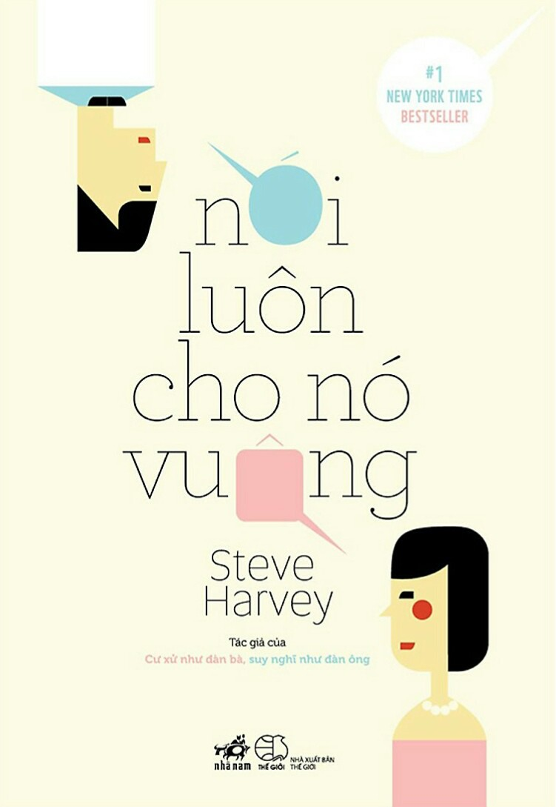

« Back
Nói Luôn Cho Nó Vuông
By Steve Harvey

GIỚI THIỆU
PHẦN Ithấu Hiểu Đàn Ông1: ĐIỀU LÀM NÊN MỘT NGƯỜI ĐÀN ÔNG
2: HẸN HÒ THEO ĐỘ TUỔI
PHỤ NỮ CÓ ĐÁNG NGẠI?
KHÔNG PHẢI “CHA NUÔI” NÀO CŨNG NGỌT NGÀO
PHẦN Iitìm Thấy Một Nửa
LÀM SAO ĐỂ ĐÀN ÔNG CAM KẾT
2. DỰNG LÊN MỘT HÀNG RÀO VÂY QUANH TRÁI TIM BẠN
NHẬN RA TẠI SAO BẠN CÒN GẮN BÓ VỚI ANH TA
3. NẾU BẠN Ở CÙNG ANH TA BỞI KHOÁI CẢM TÌNH DỤC
4. NẾU BẠN Ở CÙNG ANH TA VÌ TIỀN BẠC
MƯỜI HAI CÁCHPHÁT HIỆN RA NGƯỜI ĐÀN ÔNG CỦA BẠN SẴN SÀNG CAM KẾT
PHẦN IIIHÃY DỪNG NHỮNG CUỘC CHƠI LẠI
CÁCH CHƯNG DIỆN LÀ TẤT CẢ
TÁM CÁCH ĐƠN GIẢN ĐỂ THỂ HIỆN SỰ BIẾT ƠN CỦA BẠNVÀ NHẬN LẠI ĐƯỢC GÌ ĐÓ CHO BẢN THÂN
TIỀN BẠC VÀ LÝ TRÍ
NGHỆ THUẬT THƯƠNG THẢO
PHẦN Ivcâu Hỏi Và Lời Khuyên
DÀNH CHO ĐÀN ÔNG
Chú Thích